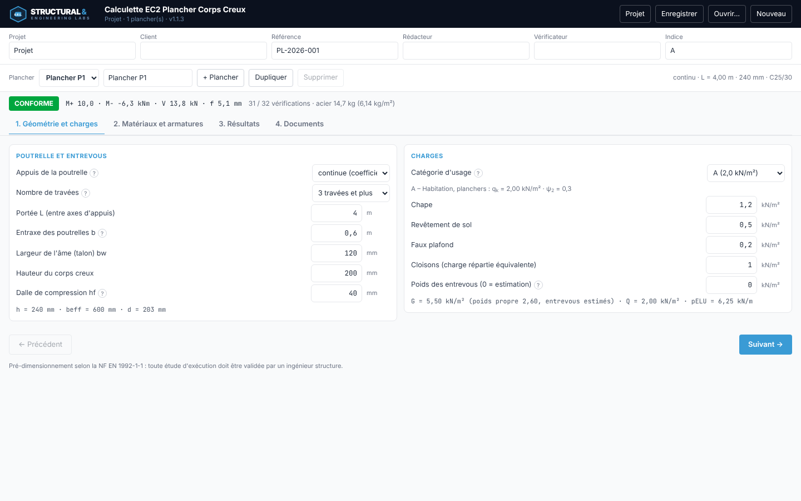
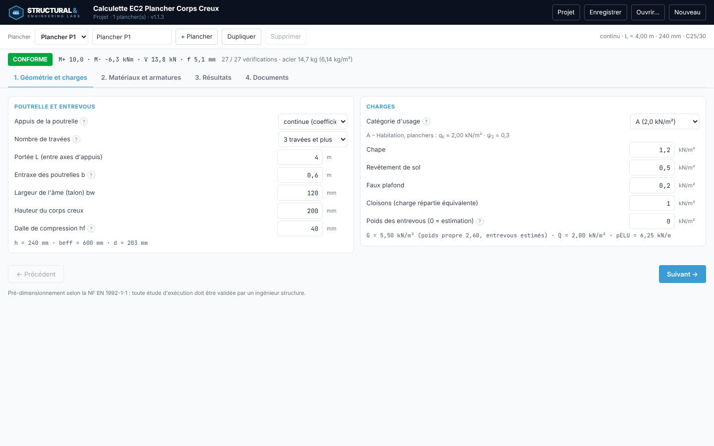
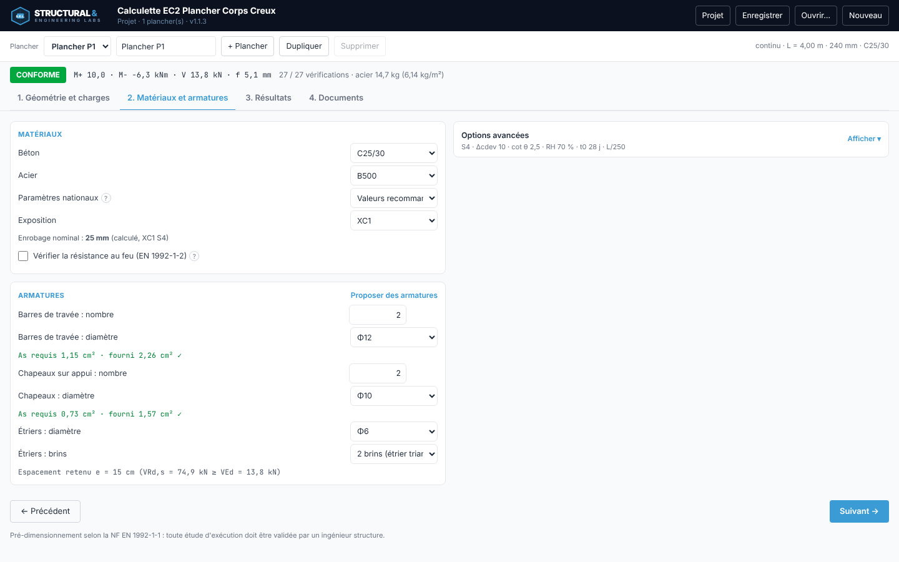
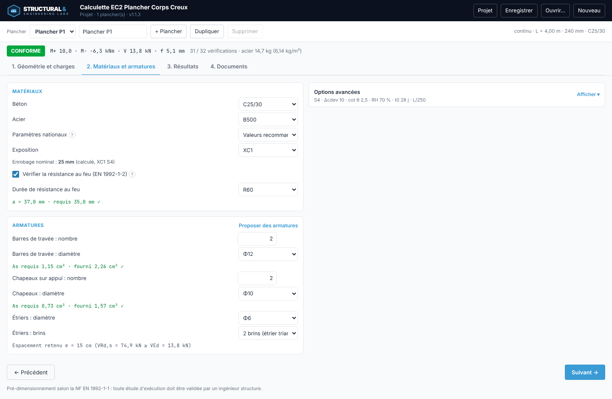
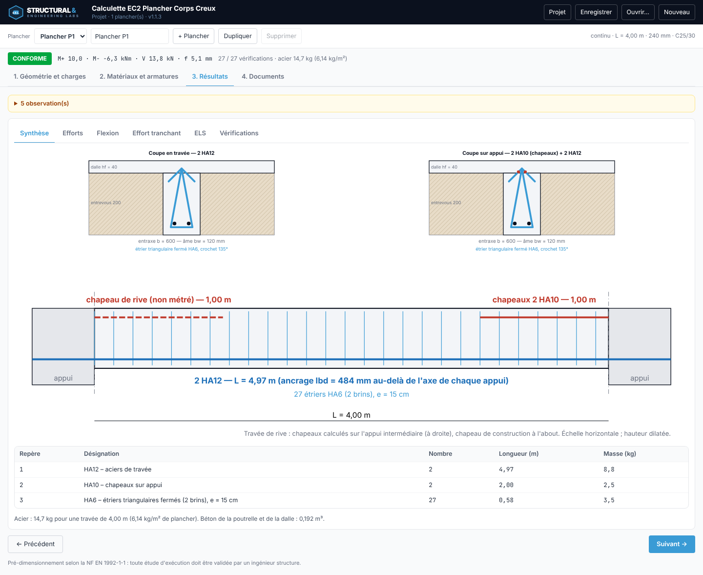
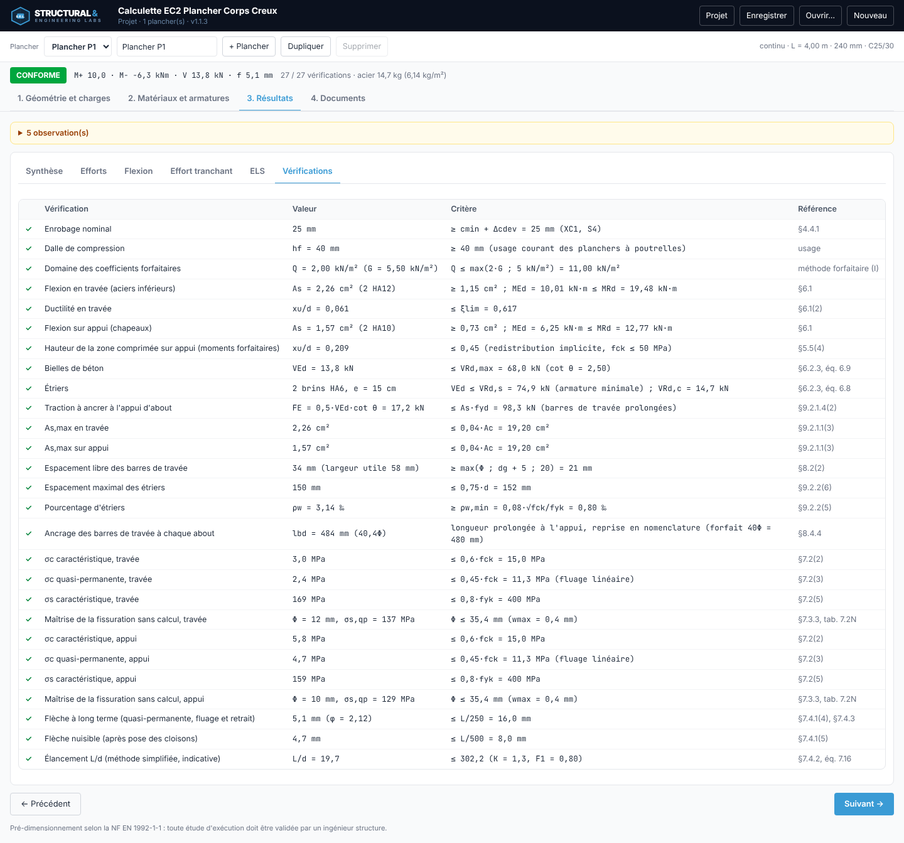
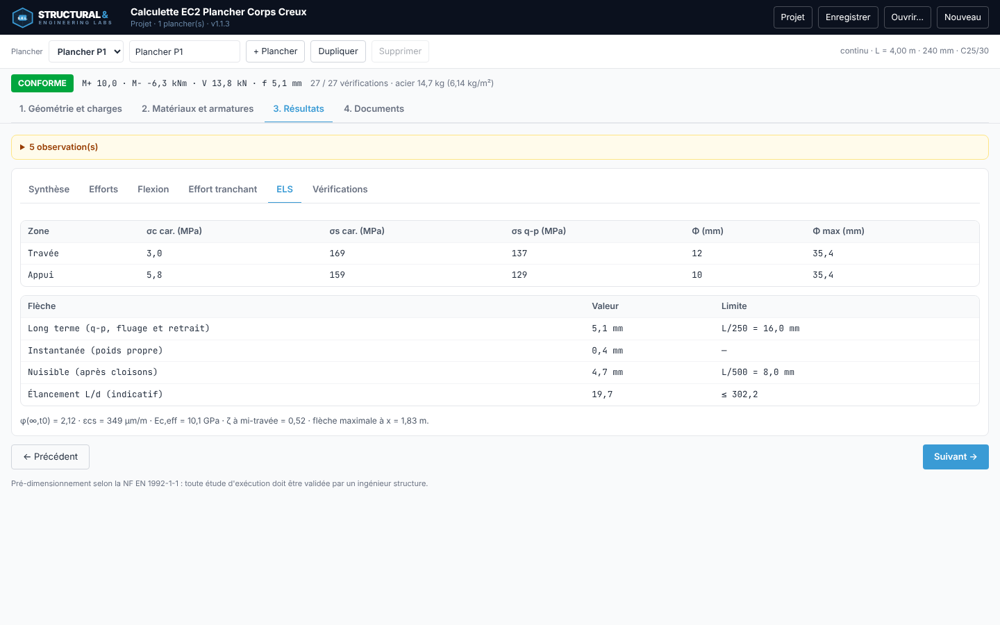
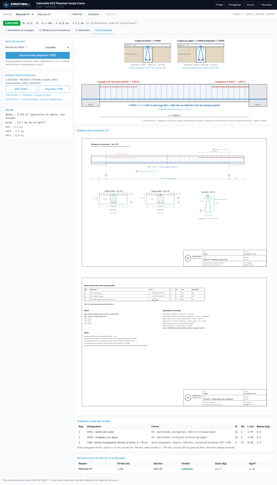
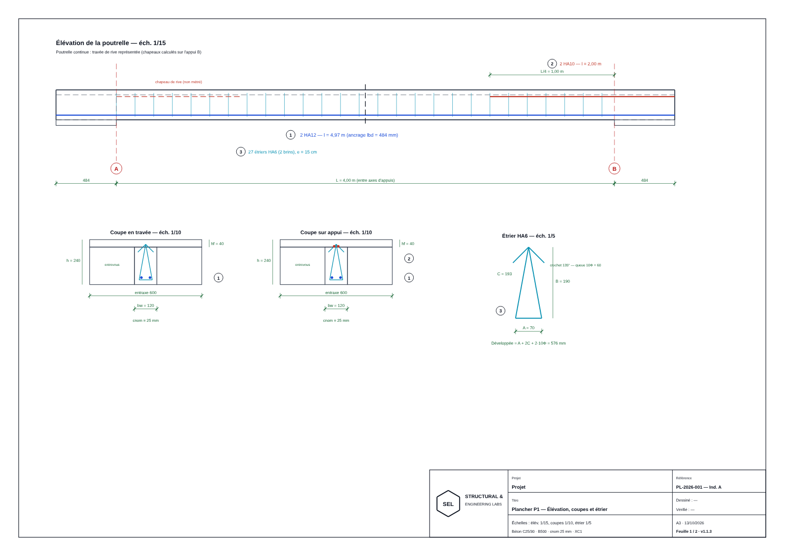
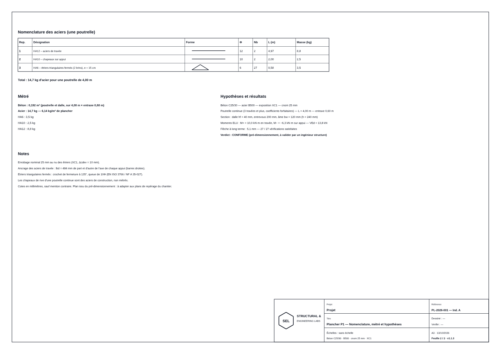

Guide d'utilisation — plancher à poutrelles et entrevous, Eurocode 2
NF EN 1992-1-1 · NF EN 1992-1-2 — poutrelle isostatique ou continue, note de calcul, plans A3 et DXF, nomenclature et métré.
La Calculette EC2 Plancher Corps Creux dimensionne et vérifie une poutrelle représentative d'un plancher à corps creux (poutrelles, entrevous, dalle de compression) selon la NF EN 1992-1-1 : sollicitations, flexion en travée et sur appui, effort tranchant, états limites de service, dispositions constructives et, en option, résistance au feu (EN 1992-1-2). Elle produit la note de calcul, la nomenclature des aciers, le métré et les plans d'exécution A3 (SVG, DXF, impression).
| Domaine | Vérifications principales |
|---|---|
| Sollicitations | Descente de charges (EN 1990, EN 1991-1-1), poutrelle isostatique ou continue (coefficients forfaitaires) |
| ELU | Flexion en section en T (travée) et rectangulaire (appui), ductilité, effort tranchant (bielles, étriers), traction à l'appui d'about |
| ELS | Contraintes en section fissurée, fissuration sans calcul (tableau 7.2N), flèche à long terme calculée (fluage, retrait), flèche nuisible L/500 |
| Dispositions | As,min et As,max, espacement des barres, étriers (espacement, pourcentage), ancrage lbd, enrobage |
| Feu (option) | Valeurs tabulées de la nervure : largeur, âme, distance a de l'axe des armatures au parement, barres d'angle |
Le verdict en tête de page (CONFORME, NON CONFORME, NON VÉRIFIÉ) ne vaut que pour les vérifications effectuées : l'onglet « Vérifications » liste ce qui est couvert et la note rappelle ce qui ne l'est pas (voir « Limites »).
Le travail se fait en quatre étapes, accessibles par les onglets en haut de page :
Le bandeau sous l'en-tête reste visible : verdict, moments et effort tranchant maximaux, flèche, nombre de vérifications satisfaites, masse d'acier. Une valeur hors bornes est signalée en rouge et le verdict devient « non vérifié » tant qu'elle n'est pas corrigée.
Projet. Un projet regroupe plusieurs planchers : « + Plancher », « Dupliquer », « Supprimer », liste déroulante pour passer de l'un à l'autre.
Le bouton « Projet » renseigne le cartouche (projet, client, référence, rédacteur, vérificateur, indice). Le projet est enregistré automatiquement dans le navigateur ;
« Enregistrer » produit un fichier .plancher.json à conserver, « Ouvrir… » le relit, « Nouveau » repart d'un projet vide.


Appuis. Isostatique : appuis simples. Continue : moments évalués par la méthode forfaitaire sur la travée de rive, la plus défavorable (0,8·M0 en travée ; 0,5·M0 ou 0,6·M0 sur appui intermédiaire selon 3 travées et plus ou 2 travées ; tranchant majoré de 1,10 ou 1,15). La méthode suppose des travées voisines de portées comparables, une inertie constante et Q ≤ max(2·G ; 5 kN/m²) ; un avertissement rouge signale le dépassement.
Section. Portée L entre axes d'appuis, entraxe b des poutrelles, largeur d'âme bw, hauteur du corps creux, dalle de compression hf (40 mm minimum en usage courant). La ligne de synthèse donne h, la largeur participante beff (§5.3.2.1) et la hauteur utile d.
Charges. La catégorie d'usage fixe qk et ψ2 (valeurs recommandées de l'EN 1991-1-1 et de l'EN 1990) ; avec « Annexe France » (paramètres nationaux, étape 2), qk prend les valeurs du tableau 6.2 de la NF EN 1991-1-1/NA (A 1,5 ; B 2,5 ; C1 2,5 ; C2 et C3 4,0 ; D 5,0 kN/m²) ; « Personnalisée » permet de saisir une autre valeur. Chape, revêtement, faux plafond et cloisons sont en kN/m². Le poids des entrevous est estimé si la case reste à 0 (0,6 kN/m² pour 160 mm, proportionnel à la hauteur) : saisir la valeur de la fiche du fabricant pour un calcul définitif.
Exemple traité — poutrelle continue (3 travées et plus), L = 4,00 m, entraxe 0,60 m, bw = 120 mm, entrevous 200 mm, dalle 40 mm (h = 240 mm), catégorie A, C25/30, B500. G = 5,50 kN/m², Q = 2,00 kN/m², pELU = 6,25 kN/m.

Matériaux. Béton C20/25 à C50/60, acier B400 ou B500, paramètres nationaux (valeurs recommandées ou Annexe France : qk et wmax), classe d'exposition. L'enrobage nominal est calculé (classe structurale du tableau 4.3N, cmin,dur du tableau 4.4N, Δcdev = 10 mm) : ici 25 mm. Les options avancées permettent de forcer la classe structurale, de saisir cnom, de régler cot θ, l'humidité relative, l'âge au chargement, la limite de flèche L/… et la prise en compte des cloisons fragiles (flèche nuisible L/500).
Armatures. Barres de travée, chapeaux (sur appui en poutrelle continue ; chapeaux de construction à chaque appui en isostatique), étriers. L'indicateur « As requis / fourni » signale immédiatement une section insuffisante ; Proposer des armatures retient la plus petite section couvrant le besoin avec un espacement libre conforme.
Étrier triangulaire fermé. Base A = bw − 2c, hauteur B = h − 2c, côtés inclinés C = √((A/2)² + B²), crochet de fermeture à 135° et queue de 10Φ. Longueur développée = A + 2C + 2·10Φ = 576 mm dans l'exemple (A = 70, B = 190, C = 193 mm).

La case « Vérifier la résistance au feu (EN 1992-1-2) » de l'étape 2 active la méthode des valeurs tabulées (§5.6) : la nervure est assimilée à une poutre exposée sur trois faces, tableau 5.5 en poutrelle isostatique, tableau 5.6 en poutrelle continue, pour les durées R30, R60, R90, R120, R180 et R240. Quatre contrôles bloquants entrent dans le verdict :
| Contrôle | Exigence | Exemple R60, poutrelle continue |
|---|---|---|
| Largeur de nervure | bw ≥ bmin du tableau | bw = 120 mm ≥ 120 mm |
| Épaisseur d'âme, classe WA | bw ≥ valeur minimale | bw = 120 mm ≥ 100 mm |
| Distance a de l'axe des barres de travée au parement | a ≥ a requis (interpolation sur bw) | a = cnom + Φétrier + Φ/2 = 37,0 mm ≥ 25,0 mm |
| Barres d'angle d'un lit unique | asd ≥ a + 10 mm si bw est inférieure à la colonne retenue | asd = 37,0 mm ≥ 35,0 mm |
Lecture. Le même plancher en poutrelle isostatique n'est plus conforme à R60 : a requis 40,0 mm et 50,0 mm pour les barres d'angle, alors que a = 37,0 mm ; l'application indique l'enrobage nominal à retenir (cnom ≥ 38 mm). En R90 avec bw = 120 mm, le tableau n'est pas applicable (bw < bmin = 150 mm) : élargir l'âme.
Non couvert (rappelé dans le périmètre du verdict, la note et les observations) : protection éventuelle apportée par les entrevous, tableaux des dalles nervurées (§5.7) ; les critères d'étanchéité (E) et d'isolation (I) ne font l'objet que d'une ligne indicative (hf comparée à l'épaisseur d'une dalle pleine, tableau 5.8, non bloquante) et, en poutrelle continue, armatures sur appui. La note de calcul comporte une section « Résistance au feu » et les plans une ligne dédiée.

La synthèse montre les coupes en travée et sur appui, l'élévation de la poutrelle (ancrages, chapeaux, étriers à l'espacement retenu) et la nomenclature. Les autres onglets détaillent les efforts (diagrammes M et V), la flexion, l'effort tranchant, les ELS et la liste complète des vérifications.

Une vérification marquée ✗ est bloquante et rend le verdict « non conforme » ; ⚠ signale un critère non bloquant, donné à titre indicatif (par exemple l'élancement L/d) ; ✓ indique un critère satisfait. Chaque ligne cite l'article de la norme.
Exemple traité — 27 / 27 vérifications satisfaites, verdict CONFORME. M+ = 10,0 kN·m en travée, M− = −6,3 kN·m sur appui, VEd = 13,8 kN. Flèche à long terme 5,1 mm (limite L/250 = 16,0 mm), flèche nuisible 4,7 mm (limite L/500 = 8,0 mm). Acier 14,7 kg pour la poutrelle (6,14 kg/m²). Le même plancher en isostatique est non conforme : flèche nuisible 8,9 mm > 8,0 mm.


Note de calcul. Complète (toutes les équations avec leurs valeurs) ou de synthèse : page de garde, sommaire, listes des figures et tableaux, périmètre du verdict, annexe des données d'entrée et empreinte du calcul. « Imprimer / PDF » produit le document paginé « n / N ».
Plans d'exécution A3. Deux planches, rendues à l'identique à l'écran, en SVG, à l'impression et en DXF :
Chaque feuille porte le cartouche S.E.L. (projet, repère du plancher, référence et indice, dessinateur, vérificateur, date, « Feuille n / N », version). Le bouton DXF (CAO) exporte un fichier DXF R12 ASCII : une feuille A3 par bloc de 420 × 297 mm, calques normalisés (CADRE, BETON, AXES, ACIER_INF, ACIER_SUP, CADRES, COTES, TEXTE, CARTOUCHE). Les accents et le symbole Φ sont convertis pour une lecture correcte dans les logiciels de CAO.


Nomenclature et métré. Barres de travée, chapeaux, étriers : désignation, forme (00 barre droite, 01 barre à crochet), Φ, nombre, longueur développée, masse. Béton 0,192 m³ et acier 14,7 kg pour une poutrelle de 4,00 m. Le récapitulatif du projet compare tous les planchers (portée, section, verdict, acier).
L'application est un outil de pré-dimensionnement : toute étude d'exécution doit être validée par un ingénieur structure. Le verdict ne vaut que pour le périmètre ci-dessous.
| Vérifié | Non couvert |
|---|---|
|
|
Points de vigilance :
Références : NF EN 1992-1-1 (§3, 4, 5.3.2.1, 6.1, 6.2, 7.2, 7.3, 7.4, 8.2, 8.4, 9.2), NF EN 1992-1-2 (§5.6), NF EN 1990, NF EN 1991-1-1.
Cahier de validation : 40 cas comparés à un calcul indépendant (Python) ou à un calcul manuel, tolérances explicites (docs/audit/CAHIER_VALIDATION.md).